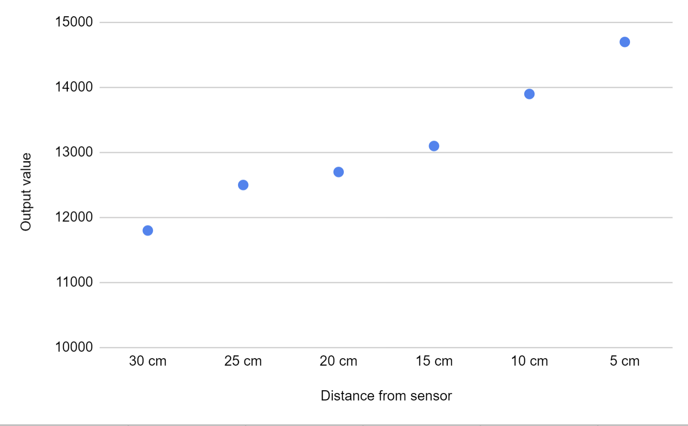
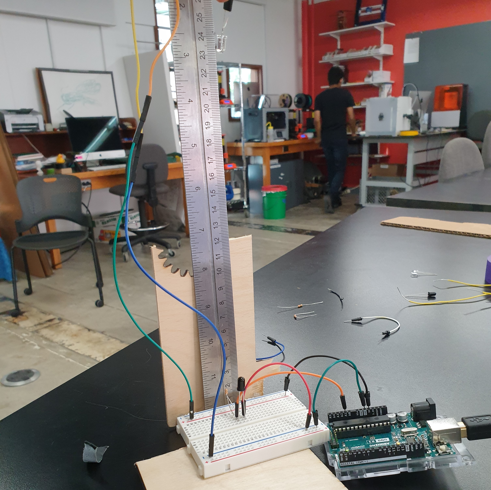
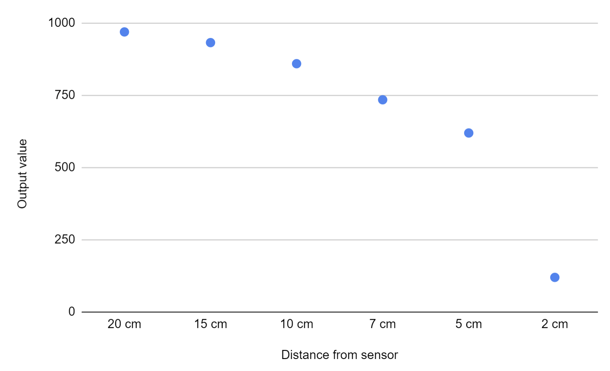

#This week’s assignment
This week, we learned about sensors and input devices - especially capacitors. We were assigned to measure the input values coming from a capacitive sensor (that would measure a specific physical quality), and from another sensor of our choosing (I went with an infrared sensor). We would then plot such points on the graph to calibrate each sensor.
##The capacitive sensor
I chose to measure distance using the capacitive sensor. I decided to measure this by having two sheets of copper (that separate the electrical circuit) be distanced from one another at different spaces and measuring the output of the circuit through an analogue INPUT pin. Below, I present a sketch of the scheme I made to measure the capacitive sensor (which also had a voltage divider), along with a support I built for the ruler to be placed perpendicularly with the ground. NOTE: In the sketch, the copper sheets are represented by the two parallel disconnected wires.
<div class="two-image-row">
<img src="./Images_week_6/Capacitor_sensor_circuit.PNG" class="half-width-image"/>
<img src="./Images_week_6/20221007_175842.jpg" class="half-width-image"/>
</div>
###The code
I then took some inspiration from Nathaniel’s capacitor code, and adapted it so that it does not use the “delay” function. This code is named transmit-receive (or tx-rx), and is essentially calculating the difference between the incoming value when the output pin is on and when it is off. This is done through a function named “tx_rx”. However, an improved version of the code calculates 10 samples of that difference and then adds them together. This creates bigger overall values, but also a rounder, easier to perceive graphical information output (the data is essentially less noisy). NOTE: Bellow, you can notice the tx_rx function only, with analog_pin initiated as A3 and tx_pin as 4 in the main program.
<pre>
<font color="#00979c">long</font> <font color="#000000">tx_rx</font><font color="#000000">(</font><font color="#000000">)</font><font color="#000000">{</font>
&nbsp;<font color="#00979c">int</font> <font color="#000000">read_high</font><font color="#000000">;</font>
&nbsp;<font color="#00979c">int</font> <font color="#000000">read_low</font><font color="#000000">;</font>
&nbsp;<font color="#00979c">int</font> <font color="#000000">diff</font><font color="#000000">;</font>
&nbsp;<font color="#00979c">long</font> <font color="#00979c">int</font> <font color="#000000">sum</font><font color="#000000">;</font>
&nbsp;<font color="#00979c">int</font> <font color="#000000">N_samples</font> <font color="#434f54">=</font> <font color="#000000">100</font><font color="#000000">;</font>
&nbsp;<font color="#000000">sum</font> <font color="#434f54">=</font> <font color="#000000">0</font><font color="#000000">;</font>
&nbsp;<font color="#5e6d03">for</font> <font color="#000000">(</font><font color="#00979c">int</font> <font color="#000000">i</font> <font color="#434f54">=</font> <font color="#000000">0</font><font color="#000000">;</font> <font color="#000000">i</font> <font color="#434f54">&lt;</font> <font color="#000000">N_samples</font><font color="#000000">;</font> <font color="#000000">i</font><font color="#434f54">++</font><font color="#000000">)</font><font color="#000000">{</font>
&nbsp;&nbsp;<font color="#d35400">digitalWrite</font><font color="#000000">(</font><font color="#000000">tx_pin</font><font color="#434f54">,</font><font color="#00979c">HIGH</font><font color="#000000">)</font><font color="#000000">;</font>
&nbsp;&nbsp;<font color="#000000">read_high</font> <font color="#434f54">=</font> <font color="#d35400">analogRead</font><font color="#000000">(</font><font color="#000000">analog_pin</font><font color="#000000">)</font><font color="#000000">;</font>
&nbsp;&nbsp;<font color="#00979c">long</font> <font color="#00979c">int</font> <font color="#000000">initial_milis</font><font color="#000000">;</font>
&nbsp;&nbsp;<font color="#00979c">long</font> <font color="#00979c">int</font> <font color="#000000">current_milis</font><font color="#000000">;</font>
&nbsp;&nbsp;<font color="#000000">initial_milis</font> <font color="#434f54">=</font> <font color="#d35400">millis</font><font color="#000000">(</font><font color="#000000">)</font><font color="#000000">;</font>
&nbsp;&nbsp;<font color="#5e6d03">while</font> <font color="#000000">(</font><font color="#000000">current_milis</font> <font color="#434f54">-</font> <font color="#000000">initial_milis</font> <font color="#434f54">&lt;</font> <font color="#000000">100</font><font color="#000000">)</font><font color="#000000">{</font>
&nbsp;&nbsp;&nbsp;<font color="#000000">current_milis</font> <font color="#434f54">=</font> <font color="#d35400">millis</font><font color="#000000">(</font><font color="#000000">)</font><font color="#000000">;</font>
&nbsp;&nbsp;&nbsp;<font color="#000000">}</font>
&nbsp;&nbsp;<font color="#d35400">digitalWrite</font><font color="#000000">(</font><font color="#000000">tx_pin</font><font color="#434f54">,</font><font color="#00979c">LOW</font><font color="#000000">)</font><font color="#000000">;</font>
&nbsp;&nbsp;<font color="#000000">read_low</font> <font color="#434f54">=</font> <font color="#d35400">analogRead</font><font color="#000000">(</font><font color="#000000">analog_pin</font><font color="#000000">)</font><font color="#000000">;</font>
&nbsp;&nbsp;<font color="#000000">diff</font> <font color="#434f54">=</font> <font color="#000000">read_high</font> <font color="#434f54">-</font> <font color="#000000">read_low</font><font color="#000000">;</font>
&nbsp;&nbsp;<font color="#000000">sum</font> <font color="#434f54">+=</font> <font color="#000000">diff</font><font color="#000000">;</font>
<font color="#000000">}</font>
&nbsp;<font color="#5e6d03">return</font> <font color="#000000">sum</font><font color="#000000">;</font>
<font color="#000000">}
</pre>
###Testing
It was then time to test out my theory. I started by measuring the output of the rx pin when the distance between the copper wires was at 30, then 25, 20, 15, 10 and 5. As it can be seen in the image below, I used the “graph insert” function that comes with google sheets to map the data using a dotted graph. I observed that the relationship between the distance and output values is not only almost linear, but also presents a clear, positive correlation. I purposely didn’t include the “0 cm” value in this graph as I saw that contact of the two copper sheets is an outlier. I believe this happens because electricity flows more freely when the plates are in contact.
<div class = "flex-center-full-size">

</div>
##The infrared photoresistor
For the infrared photoresistor, I was initially hoping to measure the distance between an object approaching the sensor. I am going to do that by measuring the analogue output value from an infrared photoresistor as an infrared light gets closer and farther away from it. For this sensor, I sketched a new circuit (as can be seen in the sketch below) and then recreated it on my breadboard (as it can be seen in the second image). NOTE: The IR bulb and its 1k ohms resistor is is attached from the breadboard with elongated wires as they are meant to be held up at a significant vertical distance from the IR photoresistor.
<div class="two-image-row">
<img src="./Images_week_6/Infrared_sensor_circuit.PNG" class="half-width-image"/>
<img src="./Images_week_6/20221008_144817.jpg" class="half-width-image"/>
</div>
###Coding
I then wrote the code for this circuit. Unlike the last sensor, the coding for this sensor is more elementary. This time, I take 100 samples of the output and then print their average. As before, this average also helps the serial plotter have less noise. Below, you can see the code I used in the loop function which avoided the delay function.
<pre>
<font color="#00979c">void</font> <font color="#5e6d03">setup</font><font color="#000000">(</font><font color="#000000">)</font> <font color="#000000">{</font>
&nbsp;<b><font color="#d35400">Serial</font></b><font color="#434f54">.</font><font color="#d35400">begin</font><font color="#000000">(</font><font color="#000000">9600</font><font color="#000000">)</font><font color="#000000">;</font>
&nbsp;<font color="#d35400">pinMode</font><font color="#000000">(</font><font color="#000000">A1</font><font color="#434f54">,</font> <font color="#00979c">INPUT</font><font color="#000000">)</font><font color="#000000">;</font>
<font color="#00979c">void</font> <font color="#5e6d03">loop</font><font color="#000000">(</font><font color="#000000">)</font> <font color="#000000">{</font>
&nbsp;<font color="#00979c">int</font> <font color="#000000">value</font><font color="#000000">;</font>
&nbsp;<font color="#00979c">int</font> <font color="#000000">sum</font><font color="#000000">;</font>
&nbsp;<font color="#00979c">int</font> <font color="#000000">avg</font><font color="#000000">;</font>
&nbsp;<font color="#00979c">long</font> <font color="#00979c">int</font> <font color="#000000">now</font><font color="#000000">;</font>
&nbsp;<font color="#00979c">long</font> <font color="#00979c">int</font> <font color="#000000">initial</font><font color="#000000">;</font>
&nbsp;<font color="#000000">sum</font> <font color="#434f54">=</font> <font color="#000000">0</font><font color="#000000">;</font>
&nbsp;<font color="#5e6d03">for</font> <font color="#000000">(</font><font color="#00979c">int</font> <font color="#000000">i</font> <font color="#434f54">=</font> <font color="#000000">0</font><font color="#000000">;</font> <font color="#000000">i</font> <font color="#434f54">&lt;</font> <font color="#000000">100</font><font color="#000000">;</font> <font color="#000000">i</font><font color="#434f54">++</font><font color="#000000">)</font><font color="#000000">{</font>
&nbsp;&nbsp;&nbsp;<font color="#000000">value</font> <font color="#434f54">=</font> <font color="#d35400">analogRead</font><font color="#000000">(</font><font color="#000000">A1</font><font color="#000000">)</font><font color="#000000">;</font>
&nbsp;&nbsp;&nbsp;<font color="#000000">sum</font> <font color="#434f54">=</font> <font color="#000000">sum</font> <font color="#434f54">+</font> <font color="#000000">value</font><font color="#000000">;</font>
&nbsp;&nbsp;&nbsp;<font color="#000000">initial</font> <font color="#434f54">=</font> <font color="#d35400">millis</font><font color="#000000">(</font><font color="#000000">)</font><font color="#000000">;</font>
&nbsp;&nbsp;&nbsp;<font color="#000000">now</font> <font color="#434f54">=</font> <font color="#000000">initial</font><font color="#000000">;</font>
&nbsp;&nbsp;&nbsp;<font color="#5e6d03">while</font> <font color="#000000">(</font><font color="#000000">now</font> <font color="#434f54">-</font> <font color="#000000">initial</font> <font color="#434f54">&lt;</font> <font color="#000000">10</font><font color="#000000">)</font><font color="#000000">{</font>
&nbsp;&nbsp;&nbsp;&nbsp;&nbsp;<font color="#000000">now</font> <font color="#434f54">=</font> <font color="#d35400">millis</font><font color="#000000">(</font><font color="#000000">)</font><font color="#000000">;</font>
&nbsp;&nbsp;&nbsp;&nbsp;&nbsp;<font color="#000000">}</font>
&nbsp;&nbsp;&nbsp;<font color="#000000">}</font>
&nbsp;<font color="#000000">avg</font> <font color="#434f54">=</font> <font color="#000000">sum</font> <font color="#434f54">&#47;</font> <font color="#000000">100</font><font color="#000000">;</font>
&nbsp;<b><font color="#d35400">Serial</font></b><font color="#434f54">.</font><font color="#d35400">println</font><font color="#000000">(</font><font color="#000000">avg</font><font color="#000000">)</font><font color="#000000">;</font>
<font color="#000000">}</font>
</pre>
###Testing
I then tested my sensor by holding the infrared light at certain distances from the sensor, and even used the support from the capacitive sensor experiment for the ruler. I realized that the background infrared light that is coming from the lab’s artificial lights is already detected by the IR photoresistor - however, as it was unchanging, I decided to just consider it an ever present constant. I measured the resistor value at 20 cm, then at 15, 10, 7, 5 and 2 cm (0 cm was not included - again - as it created maximum resistance which is a massive outlier).
<div class = "flex-center-full-size">

</div>
I decided to take a more varied amount of measurements as I noticed an exponential increase in values whenever the light was closer to the sensor. Unfortunately, the google sheets-made graph does not accurately depict the data set (as 10 is as close to 15 as it is to 7 on the x-axis). However, I believe that the correlation between the distance and output is negative and far from linear - as it more closely resembles the graph of a ln(-x) function.
<div class = "flex-center-full-size">

</div>